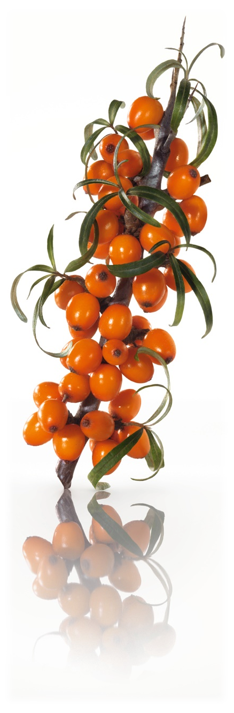

Homoktövis

A homoktövis eredetileg a Himalája lejtőin és főként Ázsiában termő növény, de ma már meghódította az egész világot. Magyarországon is találkozhatunk vele a Duna mentén, a Balaton partján vagy a Csepel-szigeten. Nálunk védett növény.
EGÉSZSÉGÜGYI HATÁSAI
A homoktövis széles spektrumon segíti szervezetünk egészségét. Gyógyító hatása akár a meleg, akár a téli időszakban jól jöhet. Legfontosabb egészségügyi hatásai: - védi és erősíti az immunrendszert
- késlelteti az öregedési folyamatot
- növeli a szervezet ellenálló képességét
- véd különböző fertőzések ellen
- segít a legyengülésben, erősítő hatású
- javítja az általános egészségügyi állapotot
- C-vitamin-tartalmának köszönhetően véd a megfázás ellen
- fokozza az anyagcserét, így segít az ideális testsúly megtartásában
- csökkenti a vércukorszintet
- védi a májat
- kedvezően hat a gyomorra
- lassítja az érelmeszesedést
- gátolja a hajhullást
- gyógyítja a sebeket
CSODANÖVÉNY
TUDTA-E?
A homoktövist különböző festési célokra is használják, ugyanis vízzel átitatva sárga színt ad, amit festők, könyvkötők, bőr- és kézművesek használnak.E-vitamint és esszenciális zsírsavakat tartalmaz, melyek jó hatással vannak a kiszáradt, berepedezett bőrre. Májelégtelenség esetén jól hasznosul más gyógynövényekkel együtt, így például a pitypanggal. A homoktöviskéreg növeli az epe kiválasztást. Érdemes cikóriával vagy gyermekláncfűvel kombinálni annak érdekében, hogy gyógyító hatását növeljük. Csökkenti a narancsbőr kialakulását, hiszen erősíti a kötőszövetet.
Termését elsősorban nem nyersen, hanem feldolgozva használják, dzsem, bor, ivólé, likőr, gyümölcslé, kompót formájában. Leveléből erősítő hatású tea készíthető. C-vitamin-tartalma tízszerese a citrom C-vitamin-tartalmához képest. Ennek köszönhetően jól használható megfázás és köhögés esetén
.Gyógyászati célra a homoktövis termését, levelét és magolaját használják fel. Erősíti és védi az immunrendszert, elősegíti az általános jó közérzetet.